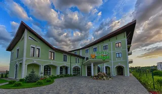
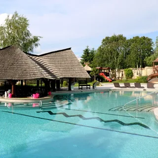
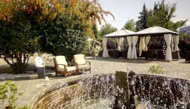
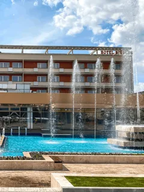

Locații de nuntă în Baia Mare
- locații în director
- 5
- cu cazare în registrul SITUR
- 3
- medie ponderată Google
- 4,4 / 5
- evaluări Google
- 4.910
Cum alegi o locație în Baia Mare
În Baia Mare poți începe comparația cu Hotel Magus (cazare), Castel Restaurant & SteakHouse (restaurant vestic), Castel Transilvania (hotel). Aceste proprietăți apar în primele poziții când luăm în calcul împreună nota și numărul de evaluări Google. Salvează adresele care vă interesează pentru a le așeza apoi alături în fișa de comparare a ofertelor.
În fișele proprietăților poți compara dotări concrete la Hotel Magus (terasă, cazare, parcare gratuită), Castel Restaurant & SteakHouse (restaurant, toaletă accesibilă). Pentru oferta de nuntă, întreabă ce spații și servicii dintre cele prezentate intră în rezervarea privată pentru data voastră.
Dacă vin rude de departe, Hotel Magus are o unitate de cazare asociată în registrul SITUR. Înregistrarea pentru Magus cuprinde 54 de locuri de dormit în 27 de spații de cazare. Întreabă câte camere pot fi păstrate pentru aceeași noapte înainte să trimiți invitaților detaliile de rezervare.
Dacă vrei să vezi două proprietăți în aceeași zi, poți continua de la Hotel Magus spre Hotel Romanița din Recea. Punctele lor sunt la 3,4 km în linie dreaptă. Deschide traseul înainte să fixezi ora celei de-a doua vizite, mai ales dacă grupul se deplasează cu autocarul.
Locații pentru vizionare
Ordinea ține cont de nota Google și de numărul evaluărilor. Cum calculăm ordinea

Fotografie a locației · Sursa fotografiei Baia Mare · Cazare
Hotel Magus
Hotel Magus, Baia Mare. Dacă trebuie să vă deplasați cu toții, stabiliți ora cursei de întoarcere înainte să alegeți ora cinei.
Strada Dura 4, 437345 Baia Mare+40 362 807 205
Hartă ilustrată Baia Mare · Restaurant vestic
Castel Restaurant & SteakHouse
Restaurant cu decor medieval în Baia Mare, lăudat pentru fripturi și pește proaspăt. Nu sunt date despre nunți; iată ce să întrebi.
Strada Mihai Eminescu 136 I, 430395 Baia Mare+40 747 200 026
Fotografie a locației · Sursa fotografiei Baia Mare · Hotel
Castel Transilvania
Hotel în Baia Mare cu camere cu șemineu, piscină exterioară și spa; site-ul pomenește nunți, iar 2.167 de evaluări dau media 4,5.
Strada Mihai Eminescu 136i, 430395 Baia Mare+40 362 807 814
Fotografie a locației · Sursa fotografiei Baia Mare · Hotel
Hotel Mara
Cele 70 de locuri publicate pentru terasa Mara privesc servirea mesei; dacă vrei dans sau un moment muzical aici, cere o schiță actualizată cu spațiul aferent.
Bulevardul Unirii 11, 430271 Baia Mare+40 743 008 487
Fotografie a locației · Sursa fotografiei Baia Mare · Hotel
Hotel Rivulus
Hotel Rivulus. Pentru o nuntă cu invitați cazați, stabilește dacă aceștia vor lua micul dejun individual sau vor avea o masă comună în dimineața următoare.
Strada Culturii 3, 430316 Baia Mare+40 262 216 302
Întrebări despre locațiile din Baia Mare
Unde pot dormi invitații în Baia Mare?
În registrul de cazare SITUR găsim Hotel Magus (54 de locuri de cazare), Hotel Mara (230 de locuri de cazare), Hotel Rivulus (114 locuri de cazare). Verifică ce camere sunt libere pentru noaptea evenimentului.
Ce proprietăți din Baia Mare au grădină sau terasă?
Hotel Magus (terasă); Castel Transilvania (terasă); Hotel Mara (terasă). Cere administratorului condițiile de folosire pentru o petrecere privată.
Care locație din Baia Mare are cele mai multe evaluări Google?
Castel Transilvania are 2.167 de evaluări în profilul Google folosit la documentare. Evaluările acoperă și alte experiențe la proprietate, inclusiv vizitele fără eveniment.
Ce alte localități pot include într-o vizionare lângă Baia Mare?
Cele mai apropiate adrese comparate pe hartă sunt în Recea, Baia Sprie, Dănești. Găsești mai jos distanțele dintre proprietățile folosite pentru această comparație.
Vizionări în apropiere
- Recea · 1 locație. Între Hotel Magus și Hotel Romanița sunt 3,4 km în linie dreaptă.
- Baia Sprie · 2 locații. Între Castel Restaurant & SteakHouse și Pensiunea Verde sunt 8,7 km în linie dreaptă.
- Dănești · 1 locație. Între Castel Restaurant & SteakHouse și Secret Garden sunt 10,1 km în linie dreaptă.